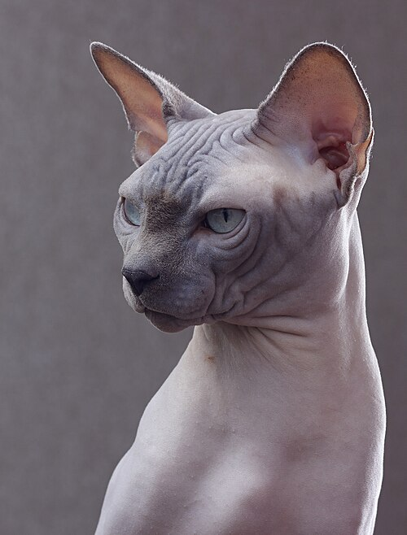

Owner's Guide Przewodnik dla Właścicieli
Canadian Sphynx Sfinks Kanadyjski
The Canadian Sphynx is a hairless, wrinkled, and famously affectionate breed — bred not for looks alone, but for a temperament that borders on canine. This guide covers what every owner needs to know: build, behaviour, feeding, and when to call in a specialist.
Sfinks kanadyjski to bezwłosa, pomarszczona i niezwykle uczuciowa rasa — wyhodowana nie tylko dla wyglądu, ale i dla temperamentu bliskiego psiemu. Ten przewodnik zawiera wszystko, co powinien wiedzieć każdy opiekun: budowę ciała, zachowanie, żywienie oraz sytuacje wymagające konsultacji specjalisty.

- OriginPochodzenie
- Toronto, Canada · 1966Toronto, Kanada · 1966
- WeightWaga
- 3.5–6 kg (8–12 lb)
- LifespanDługość życia
- 9–15 years9–15 lat
- CoatSierść
- Hairless, suede-likeBezwłosa, jak zamsz
Characteristics Charakterystyka
- Hairless or covered in fine down ("peach fuzz"); skin ranges from pink to grey to black, following the same colour and pattern genetics as furred cats.
- Bezwłosa lub pokryta cienkim meszkiem ("brzoskwinka"); skóra bywa różowa, szara lub czarna — zgodnie z tą samą genetyką umaszczenia co u kotów z futrem.
- Deeply wrinkled skin, especially around the muzzle, shoulders, and legs.
- Głęboko pomarszczona skóra, szczególnie w okolicach pyszczka, barków i łap.
- Large, wide-set ears and lemon-shaped eyes give the breed its distinctive, alien-like look.
- Duże, szeroko osadzone uszy oraz oczy w kształcie cytryny nadają rasie charakterystyczny, "kosmiczny" wygląd.
- Muscular, potbellied body with a barrel chest — surprisingly heavy for its size.
- Umięśnione, beczkowate ciało z szeroką klatką piersiową — kot jest zaskakująco ciężki jak na swój rozmiar.
- Body temperature runs about 2°C higher than furred breeds, so they constantly seek out warmth.
- Temperatura ciała jest o około 2°C wyższa niż u kotów z futrem, dlatego sfinksy nieustannie szukają ciepła.
- Little to no shedding, but the skin produces natural oils that need regular bathing.
- Praktycznie nie linieją, ale skóra wydziela naturalny łój, co wymaga regularnych kąpieli.
Temperament Temperament
- Extroverted and people-oriented — often called "Velcro cats" for how closely they follow their owners.
- Ekstrawertyczne i silnie związane z ludźmi — bywają nazywane "kotami na rzepie" za to, jak wiernie podążają za opiekunem.
- Highly intelligent and food-motivated; many learn to open doors and drawers.
- Bardzo inteligentne i zmotywowane jedzeniem; wiele z nich uczy się otwierać drzwi i szuflady.
- Playful and acrobatic well into adulthood; loves climbing to the highest point in a room.
- Zabawowe i akrobatyczne nawet w dorosłości; uwielbiają wspinać się na najwyższy punkt w pomieszczeniu.
- Craves physical warmth and contact — laps, shoulders, and shared blankets are favourite spots.
- Potrzebują fizycznego ciepła i kontaktu — kolana, ramiona i wspólny koc to ulubione miejsca.
- Generally sociable with children and dogs when introduced properly.
- Zazwyczaj przyjazne wobec dzieci i psów, gdy są prawidłowo wprowadzane.
- Vocal and communicative, especially when seeking attention or company.
- Głośne i komunikatywne, zwłaszcza gdy szukają uwagi lub towarzystwa.
Diet Dieta
- A fast metabolism that helps generate body heat means higher calorie needs than most breeds.
- Szybki metabolizm, pomagający wytwarzać ciepło ciała, oznacza wyższe zapotrzebowanie kaloryczne niż u większości ras.
- Prioritise high-quality animal protein; look for taurine-rich formulas that support heart health.
- Priorytetem powinno być wysokiej jakości białko zwierzęce; warto wybierać karmy bogate w taurynę wspierającą pracę serca.
- Small, frequent meals suit their appetite better than one or two large portions.
- Małe, częste posiłki lepiej odpowiadają ich apetytowi niż jedna lub dwie duże porcje.
- Fresh water should always be available; wet food helps with hydration.
- Świeża woda powinna być dostępna zawsze; mokra karma pomaga w nawodnieniu.
- Keep toxic foods out of reach: chocolate, onion, garlic, grapes, and xylitol.
- Produkty toksyczne trzymaj poza zasięgiem: czekolada, cebula, czosnek, winogrona i ksylitol.
- Discuss weight and heart screening (for HCM) with a vet when planning a long-term diet.
- Kwestie wagi i badań kardiologicznych (w kierunku HCM) warto omówić z weterynarzem przy planowaniu długoterminowej diety.
Behaviour Issues Problemy Behawioralne
- Separation anxiety: excessive vocalising, pacing, or destructive behaviour when left alone for long periods.
- Lęk separacyjny: nadmierne miauczenie, chodzenie w kółko lub zachowania destrukcyjne przy dłuższym pozostawieniu samego kota.
- Overgrooming: stress or skin sensitivity can lead to licking that irritates the skin.
- Nadmierna pielęgnacja: stres lub wrażliwość skóry mogą prowadzić do wylizywania podrażniającego skórę.
- Attention-seeking mischief: knocking objects over or interrupting activities when under-stimulated.
- Psoty na tle szukania uwagi: strącanie przedmiotów lub przerywanie czynności domowników przy niedostatecznej stymulacji.
- Food obsession: fast metabolism can present as constant "begging" or counter-surfing.
- Obsesja na punkcie jedzenia: szybki metabolizm może objawiać się ciągłym "wyżebrywaniem" jedzenia lub buszowaniem po blatach.
- Cold-triggered hiding: a chilled Sphynx may become withdrawn, tense, or unusually irritable.
- Chowanie się przy chłodzie: zziębnięty sfinks może stać się wycofany, spięty lub niezwykle drażliwy.
- Litter box aversion linked to stress in multi-cat households.
- Unikanie kuwety związane ze stresem w domach z wieloma kotami.
If any of these become persistent or intense, a certified feline behaviourist can help identify the root cause and build a plan — see Contact Us below.
Jeśli któreś z tych zachowań się utrzymuje lub nasila, certyfikowany behawiorysta kotów może pomóc ustalić przyczynę i opracować plan działania — zobacz sekcję Kontakt poniżej.
Contact Us Kontakt
Looking for a behaviourist consultation for your Sphynx? Send us a message about your cat's characteristics, temperament, diet, or any behaviour concerns.
Szukasz konsultacji behawiorysty dla swojego sfinksa? Napisz do nas o cechach, temperamencie, diecie lub niepokojących zachowaniach Twojego kota.
For example:
Na przykład:
- Persistent anxiety, overgrooming, or aggression
- Utrzymujący się lęk, nadmierna pielęgnacja lub agresja
- Litter box or multi-cat household issues
- Problemy z kuwetą lub w domu z wieloma kotami
- General questions about care, diet, or temperament
- Ogólne pytania dotyczące opieki, diety lub temperamentu